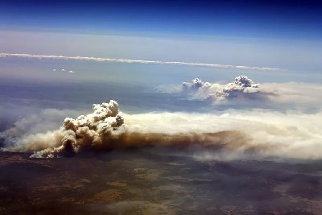

2019
Ca 2000 svenskar har klickat på länkarna till
Introduktion om återkomsten,
sedan jag startade vittna med den via Facebook, över hela Sverige. :-)
9 jan 2019 - Yo Han Lee en av 36 första välsignade paren (gick med 1952)
avlider 9 jan. 2019 i en ålder av 103
är.
Han var även Nationell Messias för Sverige.
12 jan - äldre Koreanske broder Dr. Bo Hi Pak, en av 36 paren,
avled den 12 januari 2019, 90 år (koreansk räkning) gammal.
Se familyfed.lpages.co/bo-hi-pak/
19-20 Jan 2019
Invigningen av EUME - europeiska "Cheongpyeong" - skall vandra mellan länder
Cheongpyeong Europe - Rev. In Pyo Moon - Special Lecture
1 mars 2019
100 års-jubileum av 1919 års uppror i Korea mot Japansk ockupation.
Sam-il (3-1) - nationell helgdag i Sydkorea
Uppdaterad Traditionsbok v.2019 (eng.)
mars
Världen: Boeing Max 737
Flygkrasch i Etiopien där 157 personer förolyckades var den andra på kort tid.
Ett plan av samma modell störtade i Indonesiens huvudstad Jakarta förra hösten
2018 då alla 189 omkom. - Alla plan av modellen förbjuds flyga tills vidare.
är det - Tang Gam - Gottgörelse?
15 april
 1100-talets katedral Nortre Dame i Paris brinner! - Tang Gam - Gottgörelse?
1100-talets katedral Nortre Dame i Paris brinner! - Tang Gam - Gottgörelse?
History of Nortre Dame
26-27 okt 2019 Europeisk fredskonferens & Välsignelse - Tirana Albanien
http://www.ipeacetv.com/vod/vod_view.asp?vId=11028&page=1
http://www.ipeacetv.com/vod/vod_view.asp?vId=11030&page=1
2019 - Förföders befrielse sker på olika platser i Europa. -
tidigare kallad 'Ansu' enbart i Cheong Pyeong Korea.
CheonBo-event. 9-10 nov utanför Frankfurt

Video - Rev In Pyo Moon, Hyojeong CheonBo Special
Event Preparatory Meeting
27 okt - Sanna mors World Tour kommer till Albanien
Söndagen 17 november 2019, firade vi på Täby Scandic hotell, 50-års jubileum av svenska UC-rörelsen.
28 dec 2019 (12.4 enligt den himmelska kalendern) Sanna mors 40-dagars
kosmiska Kanaan-resa för Etableringen av Cheon Il Guk, som inleddes den
18 november har avslutats som en stor seger.
Kambodja, Taiwan, Niger, Tanzania, Sydafrika, Palau och den Dominikanska republiken
måste segra för att skapa en påtaglig grund för grand finale,
Mötet för den hoppfulla marchen framåt mot en himmelskt förenad värld.

Världen: Australien
Tiotals bränder bröt ut i New South Wales, Australien, vilket fick regeringen
att förklara en nådsituation i november 2019.
Bränder spriddes snabbt över alla stater för att bli några av de mest förödande
någonsin.
Ett område med storleken av Sydkorea, ungefär 25,5 miljoner tunnland, har bränts ner.
Minst 33 personer är döda, inklusive minst tre frivilliga brandmän, och fler saknas.
Cirka 3 000 hem har förstårts eller skadats. I takt med att branden intensifierades
under dagarna fram till nyårsafton, sökte tusentals människor som
tvingades evakuera skydd på stränder över New South Wales och Victoria.